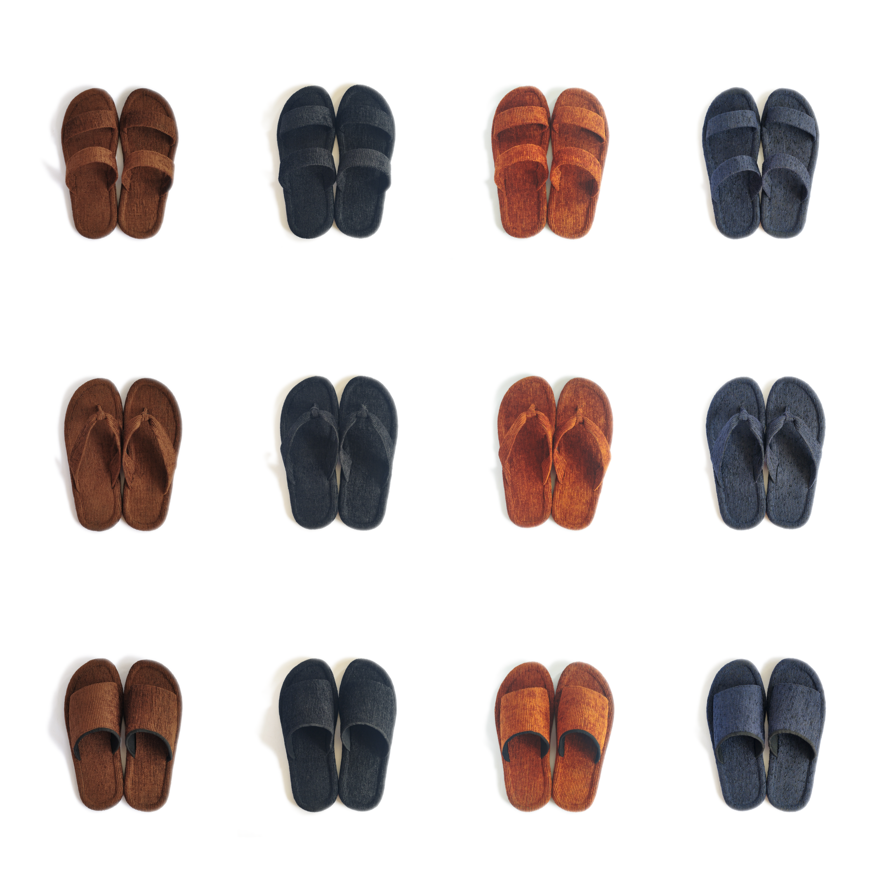
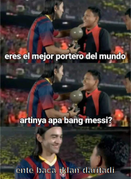

Setan Maljum
February 10, 2023 3 min read
Apa yang pertama kali diingat ketika mendengar kata -Jum’at?
Apakah Shalat Jum'at? Jum’at berkah? Malam Jum’at? Atau bukan dari salah satu itu? Coba komen dulu di batin.
Nah, aku sendiri malah ingat hal lain. Belakangan ini kata jum’at mengingatkanku kepada pocong. Bukan pocong yang itu, tetapi liga pocong. Serius, liga pocong atau liga malam jum’at akan seru pekan depan nanti. Bayangkan saja, ada duel klub besar yang lumayan lama tak bertemu, pertandingan antara Crystal Palace cabang Catalan vs setan merah asal Kabupaten Manchester.
Seandainya judi tidak dilarang, aku akan pegang barca. Prediksiku mengatakan bahwa emyu akan tumbang di leg pertama ini. Sebabnya tak lain dan tak bukan karena paduka pewaris nomor 10 Messi mencetak brace kemudian cedera hingga absen 100 minggu, hehe1x.
Disisi lain, tak bisa dipungkiri bahwa jum’at identik dengan shalat jumat. Anehnya, aku memiliki keresahan saat menjalaninya, setidaknya ada 2 menurutku.
Pertama, kehadiran anak kecil. Tiada yang salah dengan kehadiran mereka, malah bagus sebenarnya. Tapi rasa kesal tak bisa ditutupi ketika melihat mereka sujud freestyle dengan kaki melayang di udara.
Kedua, sandal jamaah yang tak tertata. Pemandangan seperti ini sering kujumpai, belum lagi ketika sandal jamaah dalam keadaan basah, bisa banjir tuh di depan tulisan batas suci. Tapi ya gimana lagi, ini tergantung fasilitas masjid serta kesadaran masing-masing jamaah. Apakah aku termasuk yang sadar? Hanya Tuhan yang tahu.

Terlepas dari itu, ternyata ada sandal selain swallow warna biru yang juga cocok digunakan untuk pergi shalat jumat. Yap, tak lain dan tak bukan adalah sandal yang kujual dan produksi bersama kerabatku sendiri @movinsolvin. Lah, promosi? Emang, hehe2x. Tapi tunggu dulu brodi, jika selama ini kalian mencari sandal yang pas untuk wudhu dan pergi ke masjid, sandal inilah jawabannya.
Tak seperti kebanyakan sandal yang terbuat dari campuran pvc dan karet, sandal ini dibuat dari spons serta karet yang dilapisi dengan material kain berkualitas. Ketika digunakan setelah wudhu/mandipun air akan diserap oleh kain sehingga kaki cepat kering. Dengan begitu, sandal yang dipakai pun tak meninggalkan bekas kaki yang basah dan kakipun tak mengotori lantai di masjid. Bayangkan, tugas marbot bisa lebih ringan hanya karena para jamaah masjid memakai sandal ini.
Bukan hanya untuk pergi ke masjid saja, produk ini bisa menghangatkan kaki dikala sedang di rumah, contohnya ketika menonton barca vs mu nanti, jangan sampai kakimu kedinginan. Belum cukup, sandal ini juga bisa menemani kaki yang bawaannya tak betah di rumah, cocok bagi yang suka keluar ke kafe, mall, taman, kuburan dan lain-lain, asal bukan ke kaki gunung semeru. Sesuaikan saja.
